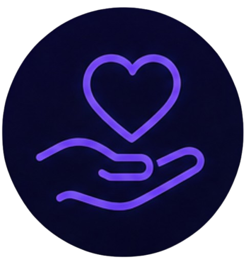

Organizaciones en El Salvador
Estas organizaciones salvadoreñas trabajan para promover la salud mental, el bienestar digital y la protección de la niñez y adolescencia en el entorno digital.
Instituto ISRA
Institución gubernamental especializada en la prevención y atención de adicciones, incluyendo el uso problemático de internet, redes sociales y tecnología.
Visitar ISRA →
Fundación Ayúdame
Organización dedicada a la prevención y atención de problemas de salud mental en jóvenes y adolescentes. Ofrecen terapias psicológicas y talleres.
Visitar Fundación Ayúdame →Consejo CONNA
Entidad rectora de las políticas públicas para la niñez y adolescencia en El Salvador. Promueve la protección de los derechos en entornos digitales.
Visitar CONNA →Instituto INJUVE
Entidad que promueve el desarrollo integral de la juventud salvadoreña. Ofrece programas de formación, orientación y prevención en salud mental.
Visitar INJUVE →Recuerda: Estas organizaciones ofrecen recursos gratuitos y confiables. No dudes en contactarlas si necesitas orientación o apoyo.